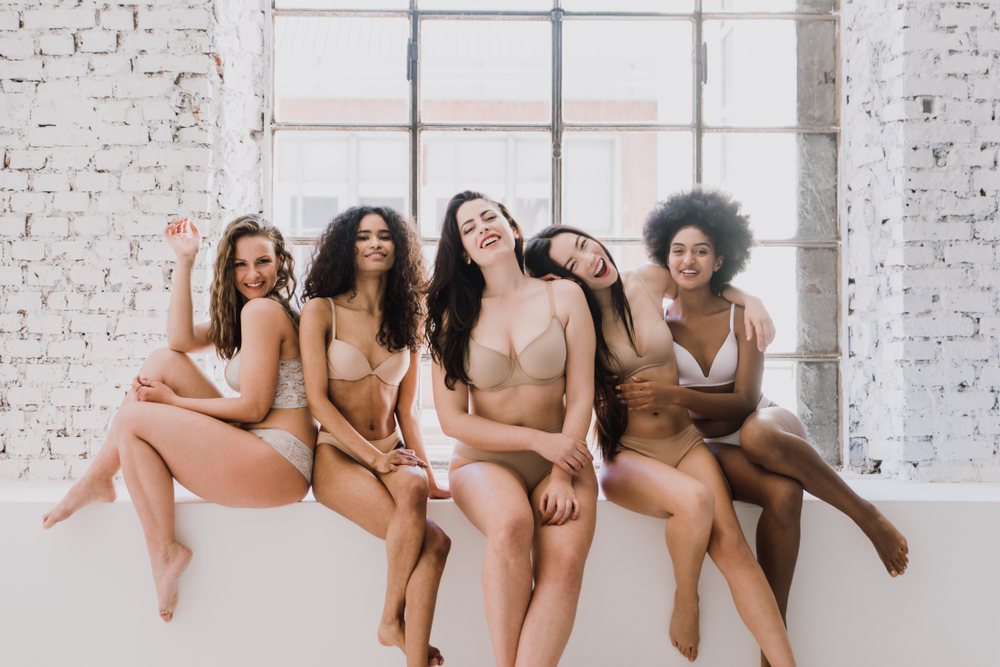

Because you deserve to be sexy, discover our post-operative lingerie that will make you feel sexy and comfortable With one, two or zero breast, the way you are does not change: BEAUTIFUL ! We are glad to launch our new collection, and soon to go, our new swimsuits to make you feel good and enjoy the beach or swimming pool this summer ☀️
We created matching ensembles with nice fabric that is adapted to ensure the scarification of your breast. The bras are available from cup A to D, and the 2 different models are each available in 3 colors. Please note that the product pictures are from Internet, not the creation of Asymétrique, as the project is not launched yet.
 Discover the new collection 💃Aubane de Varine is currently finishing her master 1 in Entrepreneurship and Innovation at IÉSEG. She decided to do a brand creation project instead of a thesis for the end of the master. "I decided to create a post-operative lingerie brand for women that suffered of a breast cancer. While working for an underwear company, I noticed how frustrated these women were when looking at the ensembles that were sexy and diversified. I strongly believe that every women needs to wear the lingerie that will make her self-confident and strong to face life's challenges."